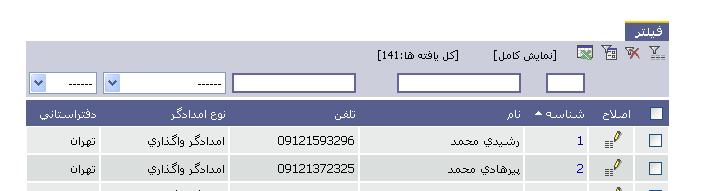
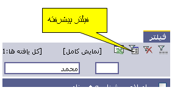
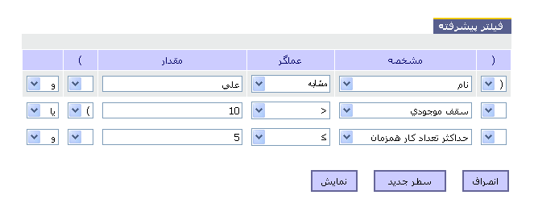

|
کار با فیلتر ها برای هر لیست دو نوع فیلتر وجود دارد: فیلتر عادی: در قسمت بالای هر لیست قسمتی برای فیلتر کردن وجود دارد مشابه شکل زیر. هر ستون که قابل فیلتر کردن باشد در بالای آن ستون قسمتی برای وارد کردن مقدار فیلتر وجود دارد که به دو شکل است: 
 فیلتر پیشرفته: با کلیک روی آیکون نشان داده شده در شکل روبرو میتوانید وارد قسمت فیلتر پیشرفته شوید. پس از وارد شدن به فیلتر پیشرفته میتوانید هر مشخصه موجود را با هر مقدار ی توسط عملگرهای متفاوت مقایسه و میتوانید با زدن دکمه سطر جدید شرط جدیدی را با شرطهای موجود و و یا کنید. سپس با کلیک روی دکمه نمایش میتوانید حاصل فیلتر شدن لیست را ببینید.  |